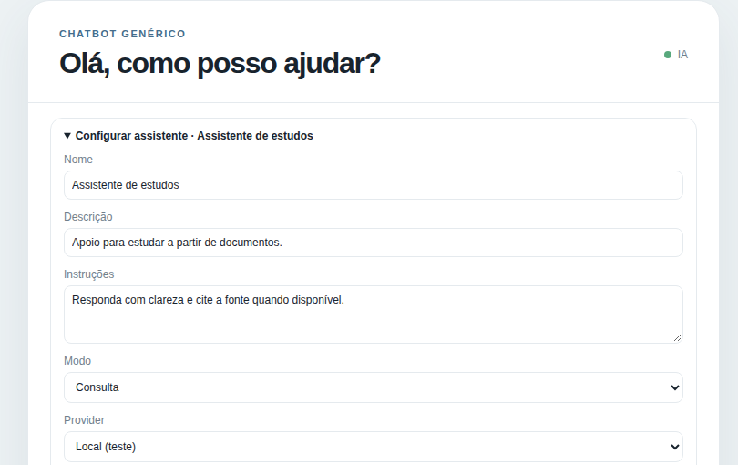
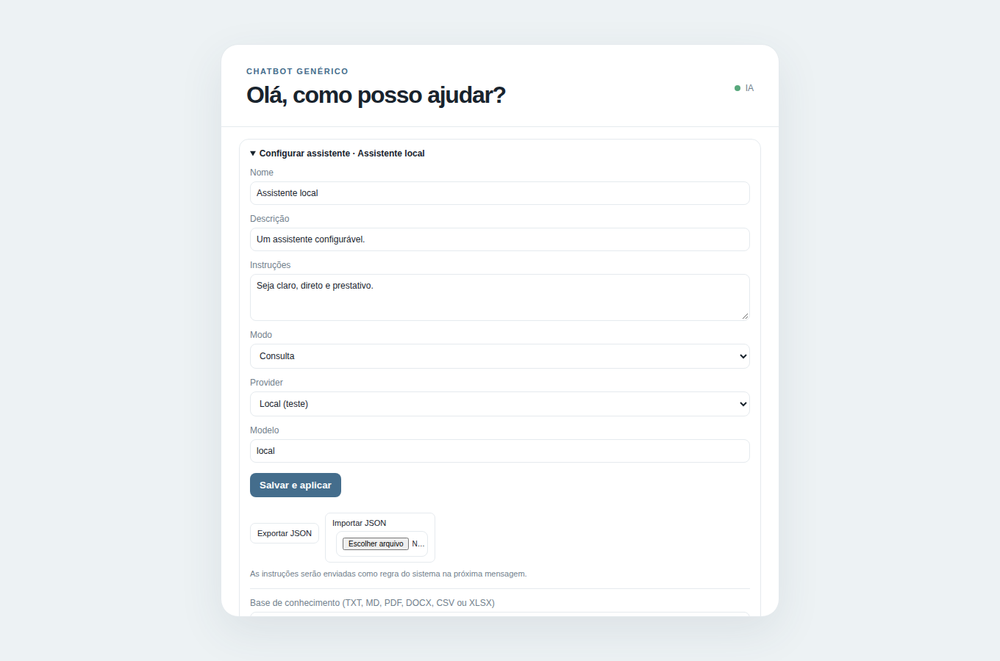

Chatbot Configurável
Assistentes com instruções configuráveis, busca em documentos e histórico de conversas. A primeira versão está concluída.

Sobre o projeto
Eu queria testar assistentes para tarefas diferentes sem reescrever a aplicação a cada vez. Fiz uma tela para configurar o nome, as instruções, o provedor e o modo de conversa. Há modos de consulta, tutor e avaliação.
Também adicionei uma base de conhecimento que aceita arquivos TXT, MD, PDF, DOCX, CSV e XLSX. O app procura trechos relevantes desses documentos e mostra as fontes junto das respostas. Posso testar o fluxo com um provedor local, sem chave, ou configurar OpenRouter e Gemini.
O histórico guarda as conversas, e as configurações podem ser importadas ou exportadas em JSON. A primeira versão está pronta; ainda quero melhorar a forma de conferir se uma resposta realmente está apoiada nas fontes.
Notas de desenvolvimento
- Desenhar um assistente configurável sem prender a interface a um único modelo.
- Recuperar trechos de documentos e mostrar as fontes ao usuário.
- Organizar histórico, importação e exportação das configurações.
Ferramentas
- Next.js
- TypeScript
- SQLite
- RAG
- Busca em documentos
- Testes automatizados
Por dentro do projeto
